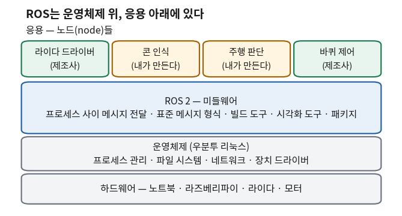
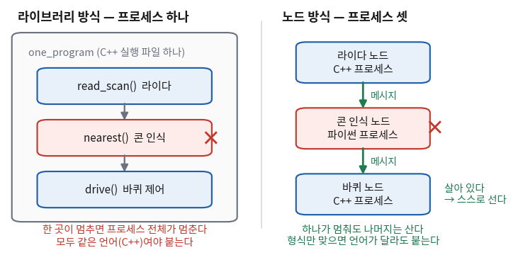
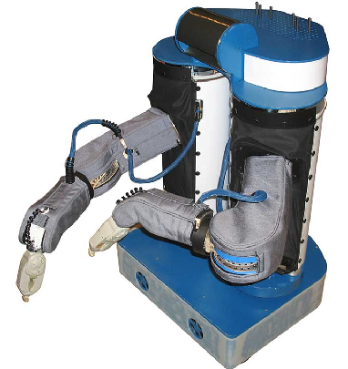
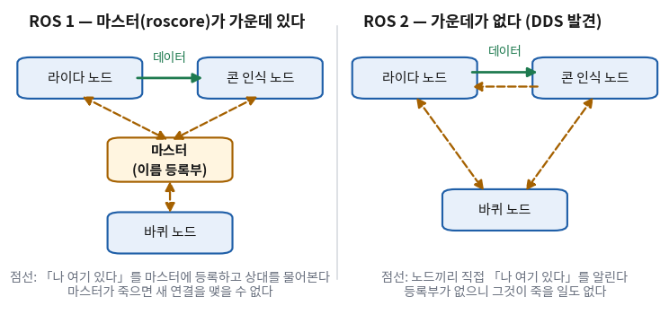

ROS는 이름에 「운영체제(Operating System)」가 들어 있다. 그럼 리눅스나 윈도우 같은 것인가?
남이 만든 기능을 가져다 쓰는 방법으로 이미 라이브러리가 있다. ROS는 왜 기능을 따로 도는 실행 파일로 주나?
기능을 프로세스 여러 개로 나누면 무엇이 좋아지고, 무엇을 대가로 치르나?
ROS 1이 이미 있었는데 왜 고치지 않고 ROS 2를 새로 만들었나?
오늘부터 3부, ROS 2다. 2부 아홉 회차 동안 C++로 라이다 값을 거르고, 가장 작은 값을 찾고, 콘을 세는 코드를 짰다.
그런데 그 코드는 전부 콘솔에서 혼자 도는 프로그램이었다. 라이다에서 값을 직접 받지도 않았고, 바퀴에 명령을 보내지도 않았다.
실제 로봇에서는 그 사이를 이어 주는 무언가가 있어야 한다. 이 과목에서 그 역할을 하는 것이 ROS다.
이 회차에는 따라 칠 ROS 명령어가 없다. ROS는 16회에 설치한다.
오늘은 설치하기 전에 ROS가 왜 이런 모양으로 생겼는지를 먼저 본다.
이 판단 하나가 3부와 4부 전체를 지배하기 때문이다 — 패키지를 왜 나누는지(19회), 메시지를 왜 정해진 형식으로 보내는지(17회),
QoS가 왜 있는지(22회), 실물 로봇에서 왜 도메인 ID를 맞추는지(28회)가 전부 오늘 볼 설계 결정에서 나온다.
손으로 해 볼 것은 하나 있다. 2부에서 하던 대로 CMake로 빌드하는 콘솔 C++ 프로그램 하나를 돌려 본다.
「기능을 한 프로그램에 묶으면 무슨 일이 생기나」를 눈으로 보기 위해서다.
한 장 요약
무엇을 먼저 볼지: 오른쪽 「이것만 알면 된다」 열이다. 학기가 끝나도 이 열만 남으면 된다.
용어
한 줄 뜻
이것만 알면 된다
수준
메타 운영체제(meta-operating system)
운영체제 위에 얹혀 로봇에 필요한 기능을 더해 주는 층
ROS는 리눅스를 대신하지 않는다. 우분투 위에 설치한다
[알아보기]
미들웨어(middleware)
운영체제와 응용 프로그램 사이에서 둘을 잇는 소프트웨어
ROS가 하는 일의 알맹이는 프로세스 사이에 메시지를 날라 주는 것이다
[알아보기]
라이브러리 방식
기능을 함수·클래스로 주고, 내 프로그램에 링크해 한 프로세스 안에서 부른다
언어가 같아야 붙고, 하나가 멈추면 전체가 멈춘다
[판단]
노드(node)
기능 하나를 맡아 독립된 프로세스로 실행되는 프로그램
ROS는 기능을 라이브러리가 아니라 노드(실행 파일)로 준다
[판단]
메시지(message)
노드끼리 주고받는, 형식이 미리 정해진 데이터
형식만 맞으면 C++ 노드와 파이썬 노드가 대화한다
[판단]
마스터(master, ROS 1)
노드들이 서로를 찾도록 이름을 등록받던 중앙 프로그램
ROS 1의 한가운데였고, ROS 2에서 없어졌다
[알아보기]
DDS(Data Distribution Service)
산업용 통신 미들웨어 표준. ROS 2가 통신을 맡긴다
노드가 스스로 서로를 찾는다. 실시간·보안·QoS가 여기서 온다
[알아보기]
배포판(distribution)
ROS 묶음 한 벌에 붙인 판 이름
이 과목은 Jazzy Jalisco — 우분투 24.04의 짝, 2029년 5월까지 지원
[알아보기]
해석: 여덟 줄 중 [판단]이 붙은 세 줄이 오늘의 알맹이다.
「기능을 노드로 나눈다」는 결정 하나에서 나머지가 따라 나온다.
노드가 따로 돌기 때문에 메시지 형식을 정해야 하고, 노드끼리 서로를 찾아야 하므로 마스터나 DDS가 필요하다.
18회 이후 학생이 쓰는 명령어도 대부분 「지금 어떤 노드가 떠 있고 무엇을 주고받나」를 묻는 명령이다.
① ROS의 정의 — 메타 운영체제와 미들웨어 🔴 사람이 한다
ROS는 Robot Operating System의 줄임말이다. 이름만 보면 리눅스나 윈도우 같은 운영체제를 떠올리기 쉽다.
그런데 16회에 학생이 하는 일은 이미 깔린 우분투 위에 ROS를 설치하는 것이다.
운영체제 위에 또 운영체제를 깐다는 말이 이상하게 들릴 수 있다. ROS는 스스로를 어떻게 정의하고 있을까?
ROS 위키의 소개 글은 이렇게 시작한다.
ROS is an open-source, meta-operating system for your robot. It provides the services you would expect from an operating system,
including hardware abstraction, low-level device control, implementation of commonly-used functionality,
message-passing between processes, and package management.
— wiki.ros.org/ROS/Introduction
옮기면 이렇다. ROS는 로봇을 위한 오픈 소스 메타 운영체제다.
하드웨어 추상화, 하위 장치 제어, 자주 쓰는 기능의 구현, 프로세스 사이의 메시지 전달, 패키지 관리처럼
운영체제에 기대할 만한 서비스를 준다.
여기서 「메타(meta)」가 핵심이다. ROS는 프로세스를 만들고, 메모리를 나눠 주고, 파일을 저장하는 일을 하지 않는다.
그건 여전히 리눅스가 한다. ROS는 그 위에 얹혀서 로봇 프로그램에 필요한 것만 더한다.
운영체제와 응용 프로그램 사이에 끼어 있으므로 이런 소프트웨어를 미들웨어(middleware)라고도 부른다.

파란 층이 ROS다. 바로 아래 운영체제가 하던 일은 그대로 두고, 맨 위의 노드들이 서로 데이터를 주고받게 해 준다.
맨 윗줄의 초록 칸은 남이 만든 것을 받아 쓰고, 주황 칸만 우리가 만든다.
🆕 이 절에서 처음 나오는 것
미들웨어(middleware)
운영체제와 응용 프로그램 사이(middle)에 끼어 둘을 잇는 소프트웨어를 두루 부르는 말이다.
여기서는 ROS가 「운영체제는 아니지만 응용 프로그램도 아닌」 자리에 있다는 뜻으로 쓰였다.
메타 운영체제(meta-operating system)
운영체제 「위의」 운영체제라는 뜻이다. 정식 학술 용어라기보다 ROS가 스스로를 설명하려고 고른 이름이라고 보면 대체로 맞다.
하드웨어 추상화(hardware abstraction)
기계마다 다른 사용법을 하나의 같은 모양으로 감싸 주는 것이다.
여기서는 회사가 다른 라이다 두 대가 똑같은 형식의 거리 데이터를 내놓게 해 준다는 뜻이다. 그래서 라이다를 바꿔도 콘 인식 코드는 그대로 둘 수 있다.
운영체제가 하는 일과 ROS가 더하는 일
무엇을 먼저 볼지: 가운데 열이다. 오른쪽은 ROS가 그 위에 얹는 것이다.
분야
운영체제(우분투)가 이미 하는 일
ROS가 그 위에 더하는 일
프로그램 실행
프로세스를 만들고 끝낸다 (3회 Ctrl+C)
로봇 기능 하나하나를 노드라는 프로세스로 띄우고, 여럿을 한 번에 띄운다(21회 launch)
통신
네트워크 소켓, 파이프(3회 |)
노드끼리 형식이 정해진 메시지를 주고받게 한다. 상대가 어느 컴퓨터에 있는지 몰라도 된다
장치
USB·시리얼 장치 드라이버
라이다·모터를 표준 메시지로 감싼 드라이버 노드 (제조사가 준다)
설치
apt로 프로그램 설치 (2회)
ROS 패키지를 같은 apt로 받는다. 이름이 ros-jazzy-…로 시작한다
도구
터미널, 편집기
지금 흐르는 데이터를 보는 명령·그림 도구(18·22회), 빌드 도구(19회)
해석: 왼쪽 열을 지우면 ROS가 서 있을 바닥이 없다. 그래서 ROS를 쓰려면 리눅스가 먼저 있어야 하고,
이 과목이 2회에 WSL 우분투를 깔고 3회에 리눅스 명령어를 배운 이유도 여기에 있다.
표에서 가장 중요한 줄은 둘째 줄 통신이다. ②~⑤절이 그 한 줄을 풀어 쓴 것이다.
ROS 2를 이루는 것
「ROS」라고 하면 프로그램 하나를 떠올리기 쉽지만 실제로는 패키지 수백 개의 묶음이다.
16회에 설치할 ros-jazzy-desktop 한 벌만 해도 ROS 패키지가 287개 들어 있다
(이 자료를 검증한 컨테이너 — 우분투 24.04 + ros-jazzy-desktop — 에서 센 값).
그것을 안쪽부터 바깥쪽으로 나누면 대략 이렇다.
무엇을 먼저 볼지: 오른쪽 열이다. 지금 이름을 외울 필요는 없고, 「어느 회차에서 손에 잡히는가」만 보면 된다.
층
무엇이 있나 (대표 이름)
하는 일
desktop에 들어 있나 · 만나는 곳
핵심(Core)
DDS · RMW · RCL(rclcpp, rclpy)
프로세스 사이 통신, 그것을 C++·파이썬에서 부르는 라이브러리
들어 있다 · ⑥절, 19회
인터페이스
std_msgs · sensor_msgs · geometry_msgs 등 _msgs 22개
노드끼리 주고받는 메시지 형식의 정의
들어 있다 · 17회
빌드 도구
ament_cmake · colcon
8회의 CMake 위에 ROS 규칙을 더한 빌드
colcon은 함께 까는 개발 도구에 · 16·19회
도구
rviz2 · rqt 계열 20개 · turtlesim
데이터를 그림으로 보기, 연습용 거북이
들어 있다 · 17·18·22회
큰 기능
Navigation 2 · MoveIt · Gazebo
자율주행, 로봇 팔 제어, 시뮬레이션
안 들어 있다 — 필요할 때 따로 받는다 · 28회 시뮬레이션
사용자 패키지
라이다·터틀봇 드라이버
제조사가 만들어 공개한 노드
안 들어 있다 · 28회 실물 로봇
해석: 위 세 줄은 ROS를 만든 쪽이 만들고, 아래 두 줄은 전 세계 사용자가 만든다.
ROS가 「소프트웨어 한 벌」이라기보다 「생태계」라고 불리는 이유가 아래 두 줄이다.
「287개」와 「안 들어 있다」를 같이 보면, 기본 설치가 이미 크지만 그래도 세상에 있는 ROS 패키지의 일부라는 것을 알 수 있다.
② 로봇 소프트웨어의 구성 요소와 코드 재사용 🔴 사람이 한다
자율주행 로봇 한 대를 처음부터 만든다고 해 보자. 무엇이 있어야 할까?
작은 터틀봇이라도 대략 이만큼의 소프트웨어가 필요하다.
1. 로봇 플랫폼 제어 — 바퀴 모터에 속도를 넣고, 바퀴가 얼마나 돌았는지 읽는다
2. 센서 제어 — 라이다·카메라·IMU, 센서 종류마다 따로
3. 장애물 인식 — 거리 값에서 콘·벽·사람을 찾는다
4. 경로 생성 — 어디로 갈지 정한다
5. 위치 인식 — 로봇이 지금 어디 있는지 안다
6. 통합 시스템 — 위 다섯을 엮어 한 대의 로봇으로 돌린다
여섯 줄 모두 각각이 대학원 연구 주제가 될 만큼 깊다. 한 사람이나 작은 팀이 전부 직접 만들기는 어렵다.
그리고 대개는 그럴 필요도 없다. 연구자나 학생이 정말 새로 만들고 싶은 것은 그중 한두 줄이다.
이 과목에서는 3번(콘 인식)과 4번(콘 사이 길 따라가기)이 그 자리다. 1·2번은 로봇 제조사가 이미 만들어 두었다.
그러면 질문이 이렇게 바뀐다. 남이 만든 1·2번을 내 3·4번과 어떻게 붙이나?
이 질문에 답하는 방법이 크게 둘 있다. 2부에서 써 온 라이브러리 방식(③절)과, ROS가 고른 노드 방식(④절)이다.
ROS의 목적을 ROS 쪽에서는 「로봇 소프트웨어 개발에서 코드 재사용을 극대화하는 것」이라고 설명한다.
두 방식 중 무엇이 재사용에 더 맞는지가 오늘의 판단이다.
③ 라이브러리 방식 🔴 사람이 한다
개념 — 라이브러리 방식
라이브러리 방식은 남이 만든 기능을 함수나 클래스로 받아 내 프로그램 안에서 직접 부르는 방식이다.
헤더를 #include 하고, 빌드할 때 그 라이브러리를 링크한다(8회 target_link_libraries).
빌드가 끝나면 남의 코드와 내 코드가 실행 파일 하나, 프로세스 하나가 된다.
2부에서 쓴 STL이 바로 이 방식이다. std::min_element를 부르면 그 코드가 내 프로그램 안에서 돈다.
이 방식은 빠르고 단순하다. 함수 호출은 데이터를 어디로 보낼 필요가 없고, const &로 넘기면 복사도 없다(12회).
그런데 로봇 소프트웨어를 여럿이 나눠 만들 때는 두 가지가 걸린다.
한계 ① — 언어가 묶인다
C++ 라이브러리는 C++ 프로그램에서 부르라고 만든 것이다. 파이썬 프로그램에서 import로 바로 쓸 수 없다.
쓰려면 누군가 C++ 함수를 파이썬에서 부를 수 있게 감싸는 코드(바인딩)를 따로 만들어야 한다.
반대로 파이썬으로 만든 콘 인식 코드를 C++ 주행 코드에서 부르기도 똑같이 번거롭다.
로봇 분야에서는 이것이 작은 문제가 아니다. 센서 드라이버와 제어는 속도 때문에 C++로 짜는 경우가 많고(6회),
인식 쪽은 머신러닝 도구가 파이썬에 몰려 있어 파이썬으로 짜는 경우가 많다.
라이브러리로만 주고받으면 한 로봇 안에서 두 언어를 섞기 어렵다.
한계 ② — 한 곳이 멈추면 프로세스 전체가 멈춘다
두 번째 한계는 직접 돌려 보면 바로 보인다. 아래는 라이다 읽기·콘 인식·바퀴 제어 세 기능을 한 프로그램에 묶은 콘솔 C++ 코드다.
세 함수는 각각 남이 준 라이브러리라고 생각하면 된다.
세 번째 주기에 라이다가 빈 스캔(값이 하나도 없는 vector)을 돌려주게 해 두었다. 실제 센서도 연결이 잠깐 끊기면 이런 값을 낼 수 있다.
// ── 콘 인식 라이브러리 ──
float nearest(const std::vector<float> & ranges)
{
float best = ranges.at(0); // 빈 스캔이면 여기서 멈춘다
for (const auto & r : ranges) {
if (r < best) {
best = r;
}
}
return best;
}
전체 코드 — main.cpp + CMakeLists.txt (세 기능을 한 프로그램에 묶은 판 · 이대로 빌드된다)
.at(0)은 12회에서 정면 거리를 꺼낼 때 쓴 그 함수다. 인덱스가 범위 안이면 값을 주고, 범위 밖이면 그 자리에서 실행을 멈춘다.
빈 vector에는 인덱스 0도 없으므로 세 번째 주기에서 멈춘다. 실제로 나온 출력이다.
$ ./build/one_program
주기 1
가장 작은 거리: 0.6 m
바퀴 명령: 0.2 m/s
주기 2
가장 작은 거리: 0.6 m
바퀴 명령: 0.2 m/s
주기 3
terminate called after throwing an instance of 'std::out_of_range'
what(): vector::_M_range_check: __n (which is 0) >= this->size() (which is 0)
Aborted (core dumped)
실수는 콘 인식 함수 한 줄에 있었다. 그런데 멈춘 것은 프로그램 전체다.
「다섯 주기를 다 돌았다」는 줄이 안 찍혔고, 바퀴 제어 함수도 함께 사라졌다.
바퀴에 마지막으로 나간 명령은 0.2 m/s다. 그 뒤로 「서라」는 명령을 보낼 코드가 같은 프로세스 안에 있었는데, 그 코드도 같이 끝났다.
🆕 이 출력에서 처음 나오는 것
terminate called after throwing an instance of 'std::out_of_range'
.at()이 범위 밖 인덱스를 받으면 std::out_of_range라는 예외(exception)를 던지고,
아무도 그것을 받아 처리하지 않으면 프로그램이 강제로 끝난다. 여기서는 콘 인식 함수에서 던진 예외 하나가 main까지 올라와 프로세스를 끝냈다.
what(): … __n (which is 0) >= this->size() (which is 0)
예외에 붙은 설명이다. 「인덱스 0을 달라고 했는데 크기가 0이다」라는 뜻이다. 오류 메시지는 대개 이 줄이 원인을 말해 준다.
Aborted (core dumped)
운영체제가 그 프로세스를 강제로 끝냈다는 셸의 알림이다. 이때 종료 코드는 134가 찍혔다(3회의 종료 코드 126·127과 같은 자리의 숫자다).
예외를 받아 처리하는 try/catch는 이 과목에서 따로 다루지 않는다. 지금은 「처리하지 않은 예외는 프로세스를 끝낸다」만 알면 된다.
이 버그는 고칠 수 있다. 빈 스캔이면 먼저 검사하면 된다(14회의 std::optional이 그 자리에 맞는다).
하지만 요점은 이 버그 하나가 아니다. 남이 만든 라이브러리 세 개를 붙인 로봇이라면
그중 어느 하나의 실수라도 로봇 전체를 멈출 수 있다는 것이 요점이다.
그리고 남의 라이브러리 안쪽의 실수는 내가 미리 다 막을 수도 없다.
④ 노드 방식 🔴 사람이 한다
개념 — 노드와 메시지
ROS는 다른 길을 골랐다. 기능을 함수나 클래스로 주지 않고 실행 파일로 준다.
라이다 드라이버도, 콘 인식도, 바퀴 제어도 각자 따로 실행되는 프로세스다.
이렇게 기능 하나를 맡아 독립된 프로세스로 도는 프로그램을 ROS에서는 노드(node)라고 부른다.
함수에 인자를 넣고 반환값을 받는 대신, 노드는 통신으로 입력을 받고 통신으로 결과를 내보낸다.
이때 주고받는 데이터를 메시지(message)라고 하고, 그 형식은 미리 정해져 있다.
「거리 값 배열 하나와 각도 정보 몇 개」처럼 정해 두면, 보내는 쪽과 받는 쪽은 상대가 무슨 언어로 짜였는지 알 필요가 없다.
형식만 같으면 붙는다. 이것이 ROS의 설계 결정 한 줄이다.

두 그림의 X 자리를 비교한다. 왼쪽은 ③절에서 실제로 멈춘 프로그램이고, 실수 하나가 테두리 전체(프로세스)를 끝냈다.
오른쪽은 같은 기능을 노드 셋으로 나눈 모양이다. 콘 인식 노드가 멈춰도 바퀴 노드는 따로 살아 있으므로
「한동안 명령이 안 온다」를 알아채고 스스로 설 수 있다(27회의 타임아웃 정지가 그 코드다).
예제에 적용 — C++ 노드와 파이썬 노드
정말로 언어가 달라도 붙는지는 ROS에 들어 있는 연습용 노드 두 개로 확인할 수 있다.
하나는 C++로 만든 talker(말하는 노드)이고 하나는 파이썬으로 만든 listener(듣는 노드)다.
talker는 1초마다 「Hello World: 번호」라는 문자열을 메시지로 내보내고, listener는 그것을 받아 화면에 찍는다.
띄우는 명령은 16회에서 배운다. 지금은 이 자료를 만들며 두 노드를 터미널 두 개에 띄워 실제로 받은 결과만 본다.
[INFO] [1792271503.136137325] [listener]: I heard: [Hello World: 1]
[INFO] [1792271504.119759591] [listener]: I heard: [Hello World: 2]
[INFO] [1792271505.119397003] [listener]: I heard: [Hello World: 3]
[INFO] [1792271506.119873453] [listener]: I heard: [Hello World: 4]
두 출력의 대괄호 안 긴 숫자를 비교해 보면, talker가 보낸 뒤 1밀리초 남짓 만에 listener가 받았다(첫 줄은 시작 직후라 18밀리초).
C++ 프로그램이 보낸 것을 파이썬 프로그램이 받았는데, 두 프로그램 어디에도 상대 언어를 위한 바인딩 코드는 없다.
둘이 맞춘 것은 메시지 형식 하나뿐이다. 이 메시지의 형식 정의는 정말로 한 줄이다.
string data
「data라는 이름의 문자열 하나」라는 뜻이다. talker는 여기에 Hello World: 1을 넣어 보냈고, listener는 같은 정의로 읽었다.
라이다 메시지라면 이 정의가 열 줄쯤으로 길어질 뿐 원리는 같다. 메시지 정의를 읽는 법은 17회에서 다룬다.
🆕 이 출력에서 처음 나오는 것
[INFO] [1792271503.118643314] [talker]: …
ROS 노드가 찍는 로그 한 줄의 모양이다. 앞에서부터 등급(INFO), 시각(1970년부터 센 초. 점 뒤는 나노초), 노드 이름, 내용이다.
14회의 RCLCPP_ERROR가 찍는 줄도 이 모양이다. 여기서는 시각 칸 두 개를 빼서 「보낸 뒤 언제 받았나」를 알아냈다.
string data
메시지 형식 정의 한 줄이다. 앞이 타입, 뒤가 이름이다 — C++의 std::string data;와 순서가 같다.
talker와 listener가 공유하는 것은 이 정의뿐이다.
제대로 다루는 곳: 16회(talker/listener 띄우기) · 17회(메시지 정의 읽기)
예제에 적용 — 한 노드가 멈추면
③절의 질문을 노드에도 던져 볼 수 있다. 한쪽이 멈추면 나머지는 어떻게 되나?
위 실험을 이어서, 「Hello World: 4」를 보낸 직후 talker를 Ctrl+C로 끊고 5초쯤 뒤에 다시 띄웠다.
listener는 그동안 손대지 않았다. listener 쪽 터미널에 찍힌 전체다.
[INFO] [1792271503.136137325] [listener]: I heard: [Hello World: 1]
[INFO] [1792271504.119759591] [listener]: I heard: [Hello World: 2]
[INFO] [1792271505.119397003] [listener]: I heard: [Hello World: 3]
[INFO] [1792271506.119873453] [listener]: I heard: [Hello World: 4]
[INFO] [1792271511.764887501] [listener]: I heard: [Hello World: 1]
[INFO] [1792271512.764095716] [listener]: I heard: [Hello World: 2]
[INFO] [1792271513.764556477] [listener]: I heard: [Hello World: 3]
시각 칸을 보면 1506초에서 1511초 사이 5초 동안 아무것도 안 왔다. talker가 꺼져 있던 시간이다.
그동안 listener는 멈추지 않고 기다리고 있었고, 다시 띄운 talker가 번호를 1부터 새로 세자 아무것도 다시 연결하지 않았는데 곧바로 받았다.
③절의 프로그램이었다면 한쪽이 멈춘 순간 다른 쪽도 끝났을 것이다.
이것이 노드 방식이 주는 두 번째 이득, 따로 시험하고 따로 갈아 끼울 수 있다는 것이다.
콘 인식 노드를 고치는 동안 라이다 노드와 바퀴 노드는 그대로 둘 수 있다.
라이다가 없는 노트북에서는 라이다 노드 대신 미리 기록해 둔 라이다 데이터를 재생하는 노드를 띄워 콘 인식만 시험할 수도 있다(22회 기록·재생).
받는 쪽은 그 메시지가 진짜 라이다에서 왔는지 기록에서 왔는지 구별하지 않는다. 형식이 같기 때문이다.
⑤ 라이브러리와 노드의 비교 🔴 사람이 한다
그럼 노드 방식이 언제나 낫다는 뜻일까? 그렇지는 않다. 노드로 나누면 공짜로 얻는 것이 아니라 대가를 치르고 얻는다.
③·④절에서 각각 본 것을 이제 나란히 놓는다.
무엇을 먼저 볼지: 마지막 두 줄이다. 노드 방식이 치르는 대가가 거기 있다.
무엇을 보나
라이브러리 방식 (함수 호출)
노드 방식 (메시지)
붙는 조건
같은 언어, 링크
같은 메시지 형식 — 언어는 달라도 된다
한 곳이 멈추면
프로세스 전체가 멈춘다 (③절 출력)
그 노드만 멈춘다. 나머지는 기다린다 (④절 출력)
따로 시험하기
시험용 main을 따로 짜야 한다
그 노드만 띄우고, 입력은 다른 노드나 기록 데이터로 준다
갈아 끼우기
다시 빌드한다
노드를 내리고 다른 노드를 띄운다. 나머지는 다시 빌드하지 않는다
다른 컴퓨터
안 된다 — 한 프로세스다
같은 네트워크면 된다. 라이다 노드는 로봇의 라즈베리파이에서, 그림 도구는 노트북에서
속도
함수 호출 한 번. const &면 복사도 없다
메시지를 만들어 통신으로 보낸다. ④절에서 1밀리초 남짓 걸렸다
관리할 것
실행 파일 하나
노드 여러 개를 띄우고, 이름과 형식을 맞추고, 연결됐는지 확인해야 한다
해석: 위 다섯 줄은 노드 방식의 이득이고 아래 두 줄은 대가다.
로봇에서는 대체로 이득이 더 크다. 라이다는 초당 5번 오므로(6회) 한 번에 200밀리초의 예산이 있고, 1밀리초 남짓의 통신 시간은 그 안에 넉넉히 들어간다.
대가 중 더 무거운 것은 오히려 마지막 줄이다. 3부 명령어의 대부분(18회)이 이 줄을 감당하려고 있다 —
「지금 어떤 노드가 떠 있나」, 「이 둘이 정말 연결됐나」, 「초당 몇 번 오나」. 여럿을 한 번에 띄우는 launch 파일(21회)도 같은 이유로 있다.
이 과목의 콘 트랙 로봇을 노드로 나누면
4부에서 만들 콘 트랙 주행 로봇을 이 기준으로 나눠 보면 이렇다. 노드 이름은 이 자료에서 붙인 것이고, 실제 이름은 28회 이후 정해진다.
노드
누가 만드나
받는 것 → 내보내는 것
이 노드가 멈추면
라이다 드라이버
제조사 (28회에 설치)
센서 장치 → 거리 값 360개
콘 인식이 새 값을 못 받는다
콘 인식
우리 (24·27회)
거리 값 → 콘 위치
주행 판단이 새 목표를 못 받는다
주행 판단
우리 (27회)
콘 위치 → 속도 명령
바퀴 노드에 명령이 끊긴다
바퀴 제어
제조사 (28회에 설치)
속도 명령 → 모터
로봇이 움직이지 않는다
해석: 우리가 만드는 것은 가운데 두 줄뿐이다. ②절의 「여섯 줄 중 한두 줄만 새로 만든다」가 이 표에서 그대로 보인다.
오른쪽 열을 세로로 읽으면 멈춤이 위에서 아래로 전해진다는 것도 보인다. 다만 전해지는 것은 「새 메시지가 안 온다」는 사실이지 프로세스의 죽음이 아니다.
그래서 아래쪽 노드가 그 사실을 알아채고 대처할 수 있다. 그것을 코드로 쓰는 것이 27회의 일이다.
자율주행 로봇 소프트웨어를 ROS 2 노드로 나누려고 해. 라이다 드라이버, 콘 인식, 주행 판단, 바퀴 제어 네 노드로 나눴을 때 각 노드가 받는 데이터와 내보내는 데이터를 표로 정리해 줘. 그리고 콘 인식 노드가 멈추면 나머지 노드에 무슨 일이 생기는지 노드마다 한 줄씩 적어 줘. 아직 코드는 쓰지 마.
📖 ROS의 역사 🟢 읽을거리
ROS의 탄생 — 시간의 90%를 남이 만든 것을 다시 만드는 데 썼다 (20분 · 건너뛰어도 됩니다)
① 2006년 무렵, 스탠퍼드 — 같은 것을 또 만들고 있었다
스탠퍼드 대학교 케네스 솔즈베리(Kenneth Salisbury) 교수 — 로봇 손과 촉각(햅틱) 장치 연구로 알려진 교수다 — 의 연구실에
키넌 와이로벡(Keenan Wyrobek)과 에릭 버거(Eric Berger)라는 두 대학원생이 있었다.
두 사람은 로봇 연구를 하면서 같은 벽에 계속 부딪혔다.
새 프로젝트를 시작할 때마다 새 로봇의 사용법을 처음부터 익히고, 남이 이미 만들어 둔 소프트웨어를 다시 만들어야 겨우 새로운 일을 시작할 수 있었다.
훗날 IEEE Spectrum — 미국 전기전자공학자협회(IEEE)가 내는 기술 잡지 — 에 실린 회고에서 와이로벡은 그 시절의 연구자들을 이렇게 적었다.
시간의 90%를 남이 전에 짠 코드를 다시 짜고 시험용 장치를 만드는 데 쓰고, 새로운 것에 쓰는 노력은 기껏해야 마지막 10%였다.
② 그래서 무엇을 했나 — 로봇 한 대와 소프트웨어 한 벌
두 사람은 이 낭비를 줄이려고 스탠퍼드 개인용 로봇 프로그램(Stanford Personal Robotics Program)을 시작한다.
연구자 누구나 같은 로봇 위에서 같은 소프트웨어로 출발하게 하자는 것이었다. 그 첫 로봇이 아래 사진의 PR1(Personal Robot 1)이다.

PR1. 팔 두 개와 바퀴 달린 받침을 보면 공장 로봇이 아니라 집 안에서 일하는 로봇을 노렸다는 것을 알 수 있다.
소프트웨어의 출발점은 같은 학교의 대학원생 모건 퀴글리(Morgan Quigley)가 만들어 둔 스위치야드(Switchyard)였다.
스위치야드는 스탠퍼드 앤드루 응(Andrew Ng) 교수 — 인공지능 연구자다 — 의 STAIR 로봇 프로젝트를 위해 만든 로봇 소프트웨어 틀이다.
퀴글리는 그 뒤로도 계속 ROS 개발에 참여한다.
개발자를 고용하려면 돈이 필요했다. 첫 수표는 애플의 초창기 매킨토시 개발팀 출신인 조안나 호프먼(Joanna Hoffman)과
실리콘밸리 기업가 알랭 로스만(Alain Rossmann)이 써 준 5만 달러였다.
그리고 2007년, 구글 검색 엔진의 초기 기술을 래리 페이지·세르게이 브린과 함께 만든 프로그래머 스콧 하산(Scott Hassan)이
자신이 세운 로봇 연구 회사 윌로 개러지(Willow Garage)에서 이 프로젝트를 통째로 맡기로 한다.
두 사람은 윌로 개러지로 옮겨 ROS와 새 로봇 PR2를 만든다.
2007년 11월 7일 — ROS 코드의 첫 커밋이 SourceForge(당시 널리 쓰이던 오픈 소스 코드 저장 사이트)에 올라간다
2009년 8월 — ROS.org 웹사이트가 열린다
2010년 1월 — ROS 1.0
2010년 3월 2일 — 첫 공식 배포판 Box Turtle
③ 여기가 재미있다 — 「미친 소리」와 공짜 로봇 11대
처음 돈을 구하러 다닐 때 두 사람이 내건 구호는 「로봇계의 리눅스」(Linux of Robotics)였다.
회고에 따르면 돌아온 반응은 「너무 거창하다」였고, 그보다 더 자주 들은 말은 「미쳤다(crazy)」였다.
목표 금액은 400만 달러였는데 첫 수표가 5만 달러였다.
윌로 개러지는 그 「미친 소리」를 더 크게 밀어붙였다. 2010년 5월, PR2 베타 프로그램으로
미국·유럽·일본의 연구기관 11곳에 PR2를 한 대씩 무상으로 보냈다.
PR2는 그해 9월부터 판매됐는데 가격이 대당 40만 달러였다. 열한 대를 합치면 400만 달러가 넘는다.
받은 곳들은 그 로봇 위에서 ROS로 연구했고, 만든 코드를 공개했다. 로봇을 판 것이 아니라 ROS를 쓰는 사람들을 만든 셈이다.
반전은 그다음이다. 2012년 4월 ROS를 맡을 비영리 재단 OSRF(Open Source Robotics Foundation)가 세워지고,
2013년 2월부터 OSRF가 ROS의 주된 관리를 맡는다. 같은 해 8월 윌로 개러지의 인력은 하산이 세운 다른 회사로 흡수되고, 윌로 개러지는 2014년 초에 문을 닫는다.ROS를 만든 회사는 사라졌는데 ROS는 남았다. 그 회사를 나온 사람들이 세운 로봇 회사도 여럿이다.
그 뒤의 일은 짧게 적는다. 2017년 OSRF는 이름을 오픈 로보틱스(Open Robotics)로 바꾸고, 같은 해 12월 8일 ROS 2의 첫 배포판 Ardent Apalone를 낸다.
2022년 12월에는 오픈 로보틱스의 영리 부문이 구글의 모회사 알파벳의 로봇 소프트웨어 자회사 인트린식(Intrinsic)에 인수됐다. ROS 자체는 비영리 재단(OSRF)에 그대로 남았다.
2024년 3월에는 OSRF가 여러 회사를 회원으로 받아 ROS 개발을 함께 운영하는 조직 OSRA(Open Source Robotics Alliance)를 만들었다.
④ 그래서 지금 우리 손에 남은 것
「남이 만든 것을 다시 만들지 않는다」는 불평 하나가 오늘 ④절에서 본 설계 — 기능을 노드로 나눠 누구 것이든 끼워 쓰게 한 것 — 가 됐다.
⑤ 숫자로 확인한다
90% 대 10%. ROS 이전 연구자의 시간 배분이라고 와이로벡이 적은 숫자다.
5만 달러 → 400만 달러. 첫 수표와 목표 금액. 80배 차이를 「crazy」 소리를 들으며 메웠다.
40만 달러 × 11대. 2010년에 공짜로 나눠 준 PR2. 합쳐서 400만 달러가 넘는다 — 처음 구하려던 돈과 같은 규모를 거꾸로 내준 것이다.
2년 2개월. 첫 커밋(2007년 11월)에서 ROS 1.0(2010년 1월)까지. 1.0이 나오기 전 18개월 동안에만 인턴 100명 이상이 석 달씩 윌로 개러지에서 일했다.
287개. 그렇게 시작한 것이 지금 16회에 깔 기본 설치 한 벌에 든 ROS 패키지 수다
(검증 컨테이너에서 셈 — 우분투 24.04, ros-jazzy-desktop).
⑥ 출처
IEEE Spectrum, The Origin Story of ROS, the Linux of Robotics (Keenan Wyrobek, 2017-10-31) — spectrum.ieee.org/the-origin-story-of-ros-the-linux-of-robotics
IEEE Spectrum, Willow Garage Giving Away 11 PR2 Robots Worth Over $4 Million (2010)
TechCrunch, $400,000 Garage Robot Is Now Available For Purchase (2010-09-13)
Open Robotics 블로그, Intrinsic Acquires OSRC and OSRC-SG (2022-12-15)
TechCrunch, Nvidia and Qualcomm join Open Source Robotics Alliance (2024-03-19)
Wikipedia — Robot Operating System, Willow Garage
⑥ ROS 1과 ROS 2 — 마스터와 DDS 🔴 사람이 한다
지금 쓰는 것은 ROS 2다. ROS 1이 2010년부터 잘 쓰이고 있었는데, 왜 고쳐 쓰지 않고 2015년에 ROS 2 개발을 새로 시작했을까?
「새것이 좋겠지」라고 넘기기 쉽지만, 이 질문의 답을 알면 ROS 2에서 처음 보는 설정들이 왜 있는지가 풀린다.
먼저 ROS 1이 어떤 환경을 위해 만들어졌는지, 그다음 ROS 1이 노드끼리 서로를 찾던 방법(마스터)을 세우고, ROS 2가 그것을 무엇으로 바꿨는지(DDS)를 본다.
ROS 1이 전제한 환경
ROS 1은 윌로 개러지가 PR2를 만들면서 키운 소프트웨어다. 그래서 PR2가 놓였던 환경에 맞춰져 있었다.
ROS 1이 전제한 것
그 뒤 로봇 분야가 요구하게 된 것
로봇 한 대
로봇 여러 대가 한 네트워크에
성능 좋은 컴퓨터
라즈베리파이 같은 작은 임베디드 컴퓨터
리눅스
리눅스 · 윈도우 · macOS
실시간 제어는 필요 없음
정해진 시간 안에 반드시 응답 (실시간)
안정된 연구실 네트워크
끊기고 느린 무선 네트워크
대학·연구소의 연구용
제조·농업·물류의 상용 제품 (보안 필요)
오른쪽 열을 맞추려면 통신의 밑바닥부터 바꿔야 했다. 그런데 ROS 1을 그렇게 바꾸면 이미 ROS 1로 짜인 수많은 코드가 깨진다.
그래서 ROS 1은 그대로 두고 ROS 2를 따로 만들기로 했다. ROS 1은 2020년 5월 23일의 Noetic Ninjemys가 마지막 배포판이고,
그 지원도 2025년 5월에 끝났다. 지금 새로 시작하는 로봇은 ROS 2로 시작한다.
개념 — ROS 1의 마스터
④절에서 talker와 listener는 서로를 어떻게 찾았을까? 노드는 각자 따로 뜬 프로세스라서, 누군가는 「누가 어떤 데이터를 내보내고 누가 받고 싶어 하는지」를 알아야 한다.
ROS 1은 이 일을 마스터(master)라는 중앙 프로그램에 맡겼다.
노드는 뜨자마자 마스터에 「나는 이런 데이터를 낸다」·「나는 이런 데이터가 필요하다」를 등록하고, 마스터가 짝을 알려 주면 그 뒤로는 둘이 직접 데이터를 주고받았다.
ROS 1을 쓰던 사람들은 그래서 터미널을 열면 맨 먼저 마스터(roscore라는 프로그램)부터 띄웠다.
구조가 단순해서 이해하기 쉽다. 대신 마스터가 하나뿐이라는 것이 약점이다.
마스터가 죽으면 이미 연결된 노드끼리는 한동안 버틸 수 있지만 새 노드는 아무도 찾을 수 없다.
무선이 끊기는 로봇, 여러 대가 섞인 네트워크에서는 이 한 점이 자주 문제가 됐다.
개념 — ROS 2의 DDS
ROS 2는 통신을 직접 만들지 않고 DDS(Data Distribution Service)에 맡겼다.
DDS는 ROS가 만든 것이 아니다. 소프트웨어 표준을 정하는 국제 컨소시엄 OMG(Object Management Group)가 정한 통신 미들웨어 표준이고,
ROS 이전부터 국방·항공·산업 제어처럼 「늦거나 끊기면 안 되는」 분야에서 쓰이고 있었다.
표준이므로 구현한 회사가 여럿 있고, Jazzy가 기본으로 쓰는 것은 스페인 회사 eProsima가 만든 Fast DDS다
(검증 컨테이너에서 확인한 기본값: rmw_fastrtps_cpp).
DDS에서는 노드가 같은 네트워크에 「나 여기 있다, 이런 데이터를 낸다」를 스스로 알린다. 다른 노드들이 그것을 듣고 직접 짝을 맺는다.
이것을 발견(discovery)이라고 한다. 등록부가 없으니 마스터가 필요 없다.
④절에서 talker를 끊었다 다시 띄웠을 때 listener가 아무것도 하지 않고 다시 받은 것도 이 발견 덕분이다.

주황 점선이 모이는 곳을 본다. 왼쪽은 점선이 전부 마스터로 모이므로 그 칸 하나가 사라지면 새 연결이 생기지 않는다.
오른쪽은 점선이 노드끼리 바로 이어져 있다. 초록 실선(실제 데이터)은 양쪽 모두 노드끼리 직접 흐른다 — 달라진 것은 「서로를 찾는 방법」이다.
🆕 이 절에서 처음 나오는 것
OMG (Object Management Group)
1989년에 세워진 소프트웨어 표준 단체다. 회사들이 회원으로 모여 표준을 정한다. 소프트웨어 설계도를 그리는 UML도 이곳의 표준이다.
여기서는 DDS가 어느 한 회사의 제품이 아니라 공개 표준이라는 것을 보여 주려고 꺼냈다.
eProsima · Fast DDS
eProsima는 스페인의 미들웨어 회사이고, Fast DDS는 그 회사가 만든 오픈 소스 DDS 구현이다. Jazzy를 깔면 이것이 기본으로 따라온다.
RMW (ROS Middleware interface) · rmw_fastrtps_cpp
ROS와 DDS 구현 사이의 연결층이다. 이 층 덕분에 DDS를 다른 회사 것으로 바꿔도 노드 코드는 그대로 둘 수 있다.
rmw_fastrtps_cpp는 「Fast DDS에 붙는 RMW」라는 이름이다.
발견(discovery)
노드가 네트워크에 자기를 알리고 서로를 찾는 과정이다. 같은 와이파이의 다른 학생 로봇까지 발견되지 않게 칸을 나누는 번호가 도메인 ID이고, 28회에서 실물 로봇에 맞춘다.
제대로 다루는 곳: 16회(설치 후 환경변수 확인) · 22회(QoS) · 28회(도메인 ID)
ROS 1에서 ROS 2로 달라진 것
이제 두 쪽이 무엇인지 세웠으니 나란히 놓을 수 있다.
무엇을 먼저 볼지: 오른쪽 「이 과목에서」 열이다. 달라진 것이 몇 회에서 학생 손에 닿는지 적었다.
무엇
ROS 1
ROS 2
이 과목에서
통신
ROS가 직접 만든 통신(TCPROS)
DDS 표준에 맡긴다
설치하면 Fast DDS가 따라온다 (16회)
서로 찾기
마스터에 등록
노드끼리 발견, 마스터 없음
노드를 아무 순서로 띄워도 된다 (16회~)
전송 품질
사실상 한 가지
QoS(Quality of Service) — 「잃어도 빨리」와 「느려도 확실히」를 고른다
라이다 구독이 안 될 때의 원인 (22회)
로봇 여러 대
한 마스터에 한 무리
도메인 ID로 네트워크를 칸으로 나눈다
같은 강의실 터틀봇끼리 섞이지 않게 (28회)
실시간
빠르게는 돌지만 보장은 없다
운영체제와 코드가 받쳐 주면 정해진 시간 안의 응답을 보장할 수 있게 설계됐다
이 과목에서 직접 다루지는 않는다
보안
같은 네트워크면 누구나 엿볼 수 있었다
DDS 보안 기능으로 암호화·인증을 켤 수 있다
개념만 (상용 로봇의 조건)
운영체제
사실상 우분투
우분투 · 윈도우 · macOS 등
우리는 WSL 우분투 24.04 (2회)
언어 기준
C++03 · 파이썬 2 (마지막 판 Noetic에서 C++14 · 파이썬 3)
C++17 · 파이썬 3
2부를 C++17로 배운 이유 (14회)
빌드 도구
catkin
ament_cmake + colcon
16·19회
해석: 표의 아홉 줄 중 위 네 줄이 DDS 하나에서 나온 것이다. 통신을 표준에 맡기자 마스터가 없어졌고, QoS와 도메인 ID가 함께 따라왔다.
실시간은 「ROS 2를 쓰면 실시간이 된다」가 아니라 「실시간을 만들 수 있는 바탕이 생겼다」로 읽는 것이 정확하다.
실시간 운영체제와 그에 맞게 짠 코드가 함께 있어야 한다.
⚠️ 에이전트가 ROS 1 코드를 줄 때가 있다
ROS 1은 2010년부터 쓰였고 인터넷에 남은 예제가 아주 많다. 그래서 에이전트에게 「ROS로 라이다 받는 코드」를 달라고 하면
ROS 1 코드나 ROS 1 설명이 섞여 오는 경우가 있다. ROS 1 코드는 Jazzy에서 빌드되지 않는다.
아래 이름이 보이면 ROS 1 쪽이라고 보면 대체로 맞다. 지금 칠 것이 아니라 받은 답이 어느 쪽인지 알아보는 표시다.
무엇
ROS 1에서 보이는 이름
ROS 2에서 보이는 이름
C++ 라이브러리
roscpp, 코드에 ros::
rclcpp, 코드에 rclcpp::
파이썬 라이브러리
rospy
rclpy
빌드
catkin
colcon, ament_cmake
먼저 띄우는 것
roscore
없다
그래서 ROS 질문에는 처음부터 판과 배포판을 못 박아 두면 덜 헤맨다.
나는 ROS 2 Jazzy Jalisco를 우분투 24.04에서 쓰고 있어. 앞으로 답할 때는 ROS 2 Jazzy 기준으로만 답해 줘. ROS 1(roscpp, rospy, catkin, roscore)의 코드나 명령은 쓰지 말고, 혹시 ROS 1과 다른 점이 있으면 그렇다고 밝혀 줘.
⑦ ROS 2 배포판과 Jazzy Jalisco 🟢 맡긴다
ROS는 해마다 새 판을 낸다. 판마다 이름이 붙는데 이것을 배포판(distribution)이라고 한다.
리눅스의 우분투 24.04처럼 「ROS 2 Jazzy」라고 부른다. 그럼 이 과목은 왜 Jazzy를 쓰고, 다른 판과는 무엇이 다를까?
배포판 이름에는 규칙이 있다. 두 단어 모두 같은 글자로 시작하고, 그 글자가 알파벳 순서로 하나씩 넘어간다.
그리고 대부분 거북이와 관련된 이름이다.
요즘 배포판은 5월 23일, 세계 거북이의 날에 나온다. 17회부터 쓸 연습 프로그램 이름이 turtlesim(거북이 시뮬레이터)인 것도 이 전통에서 왔다.
무엇을 먼저 볼지: 「짝인 우분투」 열이다. ROS 배포판은 우분투 판에 묶여 있다.
배포판
나온 날
짝인 우분투
지원 종료
비고
Foxy Fitzroy
2020-06-05
20.04
2023-06
LTS · 끝남
Humble Hawksbill
2022-05-23
22.04
2027-05
LTS · 자료가 가장 많다
Iron Irwini
2023-05-23
22.04
2024-11
끝남 · 작년까지 이 과목이 쓰던 판
Jazzy Jalisco
2024-05-23
24.04
2029-05
LTS · 이 과목
Kilted Kaiju
2025-05-23
24.04
2026-12
LTS 아님
Lyrical Luth
2026-05-22
26.04
2031-05
LTS · 최신
해석: 짝수 해에 나온 판이 LTS로 5년 지원되고, 홀수 해 판은 1년 반 남짓이다. 그래서 대부분의 연구실과 회사는 짝수 해 판을 쓴다.
이 과목은 2회에 WSL에 우분투 24.04를 깔았으므로 그 짝인 Jazzy를 쓴다.
올해 5월에 더 새 LTS인 Lyrical이 나왔지만 그것은 우분투 26.04의 짝이고, 터틀봇 같은 로봇 제조사 패키지가 새 판을 따라오는 데는 시간이 걸리는 경우가 많다.
Jazzy는 2029년 5월까지 지원되므로 이 과목을 듣는 동안 넉넉하다.
🆕 이 표에서 처음 나오는 것
LTS (Long Term Support)
오래 지원하는 판이다. 지원 기간 동안 버그와 보안 문제를 고친 업데이트가 계속 나온다. 우분투도 짝수 해 4월 판(24.04 등)이 LTS다 — ROS가 그 리듬을 따라간다.
지원 종료 (EOL, End of Life)
그날 이후로는 고침 업데이트가 나오지 않는다는 뜻이다. 작년 자료의 Iron이 2024년 11월에 끝났기 때문에 올해 자료를 Jazzy로 옮겼다.
🧪 실습 — 단일 프로세스의 예외 종료와 노드 분할 🔴 사람이 한다
① 이걸 해 보면 무엇을 알게 되나
③절의 「한 곳이 멈추면 전체가 멈춘다」를 내 노트북에서 직접 본다. 그리고 같은 기능을 노드로 나누면 어떻게 될지
종이에 직접 그려 본다. 앞의 것은 2부에서 하던 CMake 빌드이고, 뒤의 것은 에이전트가 대신 해 줄 수 없는 설계 판단이다.
② 준비물
WSL 우분투 터미널 하나 (cmake와 g++는 6회에 설치했다)
종이와 펜 (또는 태블릿 필기 앱)
ROS는 필요 없다 — 16회에 설치한다
③ 절차
(2분) 작업 폴더를 만든다. 2부와 같은 자리다.
$ mkdir -p ~/robot_ws/l15/one_program
$ cd ~/robot_ws/l15/one_program
(3분) 파일 두 개를 만든다. ③절의 📄 상자를 펼쳐 main.cpp와 CMakeLists.txt를 복사 버튼으로 가져와 붙인다.
「주기 3」 다음에 terminate called …와 Aborted (core dumped)가 나오는지 본다.
(2분) 마지막 바퀴 명령을 찾는다. 출력에서 프로그램이 끝나기 직전에 바퀴에 나간 값이 얼마인지 적는다.
그리고 「이것이 실제 로봇이었다면 바퀴는 지금 무엇을 하고 있을까」를 한 문장으로 적는다.
(8분) 종이에 노드 그림을 그린다. ⑤절의 콘 트랙 로봇 표를 보지 않고, 상자(노드)와 화살표(메시지)로 그린다.
화살표마다 무엇이 흐르는지(거리 값? 콘 위치? 속도?)를 적는다.
마지막으로 콘 인식 노드에 X를 치고, 나머지 노드마다 「무엇을 알아채고 어떻게 해야 하나」를 한 줄씩 적는다.
(4분) 에이전트의 답과 비교한다. 아래 🤖 프롬프트 모음의 「설계를 검토받을 때」 문장에 내 그림을 글로 옮겨 붙여 보낸다.
에이전트가 고친 곳이 있으면 그 이유를 내가 납득하는지 표시한다. 납득이 안 되면 그대로 둔다.
④ 이렇게 되면 성공이다
3단계에서 이 화면이 나오면 된다. 이 자료를 만들며 실제로 받은 출력이다.
$ ./build/one_program
주기 1
가장 작은 거리: 0.6 m
바퀴 명령: 0.2 m/s
주기 2
가장 작은 거리: 0.6 m
바퀴 명령: 0.2 m/s
주기 3
terminate called after throwing an instance of 'std::out_of_range'
what(): vector::_M_range_check: __n (which is 0) >= this->size() (which is 0)
Aborted (core dumped)
4단계: 마지막 바퀴 명령으로 0.2 m/s를 적었다. 「서라」는 명령은 한 번도 안 나갔다.
5단계: 노드가 넷 이상이고, 화살표마다 흐르는 것이 적혀 있다. X를 친 노드 아래쪽 노드에 「명령이 한동안 안 오면 선다」 같은 대처가 적혀 있다.
6단계: 에이전트가 고친 곳 중 적어도 하나는 왜 그렇게 고쳤는지 내 말로 설명할 수 있다.
출력이 조금 다를 수 있는 곳: what(): 줄의 문구는 컴파일러 판에 따라 다를 수 있다. 「주기 3에서 멈춘다」는 같아야 한다.
🤖 오늘 나온 프롬프트 모음 🟢 맡긴다
오늘은 코드를 시키는 날이 아니라 설계를 묻고 검토받는 날이다. 에이전트가 무엇이라 답하든 마지막 판단은 사람이 한다.
이럴 때
이렇게 말한다
ROS 질문을 시작할 때 (매번)
"나는 ROS 2 Jazzy Jalisco를 우분투 24.04에서 쓰고 있어. 앞으로 ROS 2 Jazzy 기준으로만 답해 줘. ROS 1의 코드나 명령은 쓰지 마."
설계를 검토받을 때
"아래는 콘 트랙 주행 로봇을 ROS 2 노드로 나눈 내 설계야. 노드마다 받는 것과 내보내는 것을 적었어. 빠진 노드나 이상한 연결이 있으면 짚어 주고, 고친 곳마다 이유를 한 줄씩 붙여 줘. 코드는 아직 쓰지 마."
노드로 나눌지 망설여질 때
"이 두 기능을 노드 하나에 넣는 것과 노드 둘로 나누는 것 중 어느 쪽이 나은지, 통신 비용·따로 시험하기·고장 범위 세 가지로 비교해 줘."
받은 답이 ROS 1인지 의심될 때
"방금 준 답에 ROS 1의 것(roscpp, rospy, catkin, roscore)이 섞여 있는지 확인하고, 있으면 ROS 2 Jazzy에서 그에 해당하는 것으로 바꿔서 다시 알려 줘."
아래는 콘 트랙 주행 로봇을 ROS 2 노드로 나눈 내 설계야. 노드마다 받는 것과 내보내는 것을 적었어. 빠진 노드나 이상한 연결이 있으면 짚어 주고, 고친 곳마다 이유를 한 줄씩 붙여 줘. 코드는 아직 쓰지 마.
(여기에 내 설계를 붙인다)
이 두 기능을 노드 하나에 넣는 것과 노드 둘로 나누는 것 중 어느 쪽이 나은지, 통신 비용·따로 시험하기·고장 범위 세 가지로 비교해 줘. 두 기능: (여기에 적는다)
✅ 오늘의 점검
조금 더 알아두면 시험 범위 아님
노드를 꼭 프로세스 하나에 하나씩 두어야 하나 — 컴포넌트
⑤절에서 노드 방식의 대가로 통신 시간을 들었다. 카메라 영상처럼 메시지가 아주 크고 자주 오면 이 비용이 부담이 될 수 있다.
그래서 ROS 2에는 노드 여러 개를 프로세스 하나 안에 함께 띄우는 방법도 있다. 이렇게 만든 노드를 컴포넌트(component)라고 부른다.
한 프로세스 안에 있으면 메시지를 복사하지 않고 넘길 수 있어 빠르다. 대신 ③절의 약점 — 하나가 멈추면 같이 멈춘다 — 이 다시 돌아온다.
라이브러리와 노드의 장단점을 상황에 따라 고를 수 있게 해 둔 것이라고 보면 대체로 맞다.
이 과목의 콘 트랙 로봇은 라이다 메시지가 작고(값 360개) 초당 5번이므로 컴포넌트까지 갈 일은 거의 없다.
ROS 1과 ROS 2를 같이 쓸 수는 없나 — 브리지
ROS 1 노드와 ROS 2 노드 사이에서 메시지를 옮겨 주는 브리지(bridge)라는 프로그램이 있다.
옛 ROS 1 장비를 버리지 못하는 연구실이 ROS 2로 옮겨 가는 동안 쓰던 방법이다.
다만 ROS 1과 ROS 2는 짝인 우분투가 달라(ROS 1 마지막 판 Noetic은 20.04) 한 컴퓨터에 같이 두기가 점점 어려워졌고, ROS 1 지원도 2025년에 끝났다.
이 과목은 처음부터 ROS 2만 쓰므로 브리지를 쓸 일이 없다.